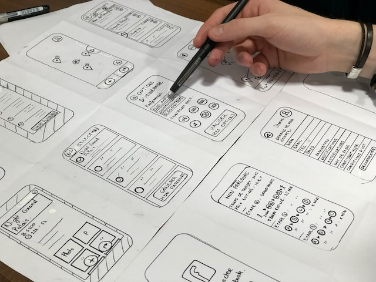
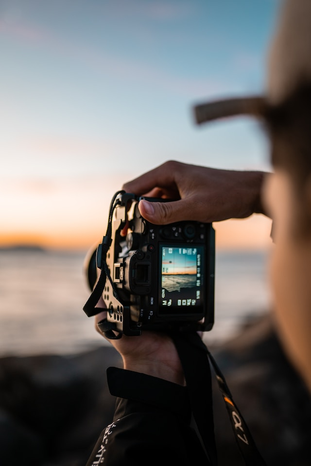
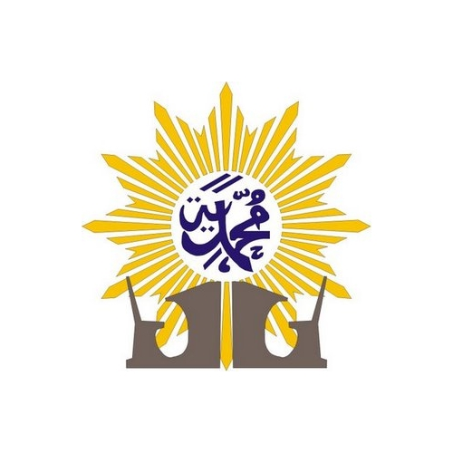
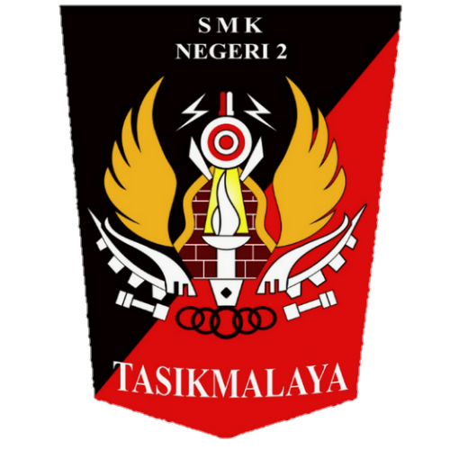

Pengembangan Web dan Software
Pengembangan web menggunakan HTML, CSS, JavaScript, PHP, dan Python.
Atau menggunakan ReactJS, NodeJs, Express.js, JQuery, Laravel, dan Django sebagai framework web.
Seorang pemuda 16 tahun yang menyukai dunia pengembangan web & software, desain UI & UX, dan Fotografi
Pengembangan web menggunakan HTML, CSS, JavaScript, PHP, dan Python.
Atau menggunakan ReactJS, NodeJs, Express.js, JQuery, Laravel, dan Django sebagai framework web.
Memiliki ciri khas element yang rounded dan color palette yang minimalis.
Konsep desain yang sederhana dan estetik menjadi prioritas dari desain yang dibuat, tanpa menghilangkan kemudahan pengalaman bagi pengguna.

menyukai aperture yang kecil menghasilkan efek yang lebih nyata dan fokus.
Dan memperhatikan Rule of Third membuat hasil potret menjadi lebih ciamik

2013 - 2019

2019 - 2022

2022 - Sekarang